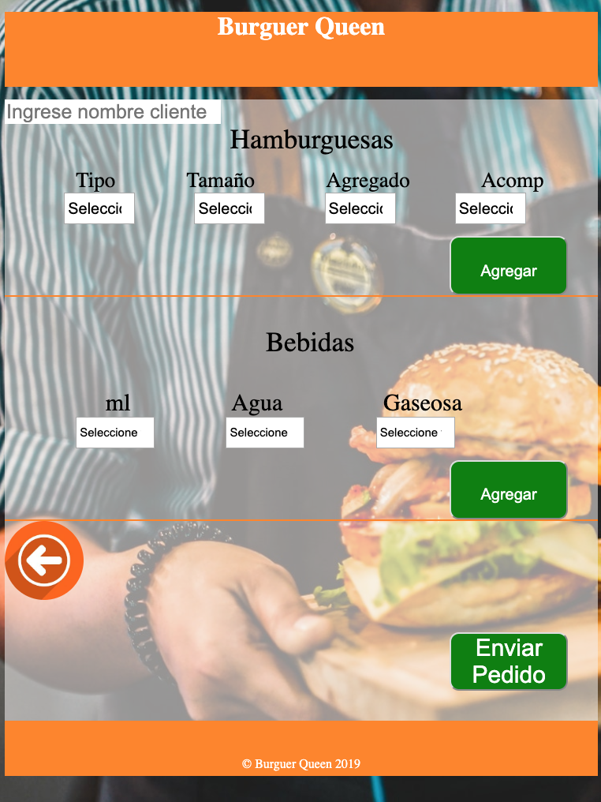

App para pedidos de restaurant
Burger-queen es un carrito de compras de comida, en donde el mesero podrá hacer los pedidos de los clientes, podrá modificar dichos pedidos, de igual manera podrá lanzar la orden hacia la cocina. Finalmente, esta app puede emitir una boleta básica de los pedidos.
